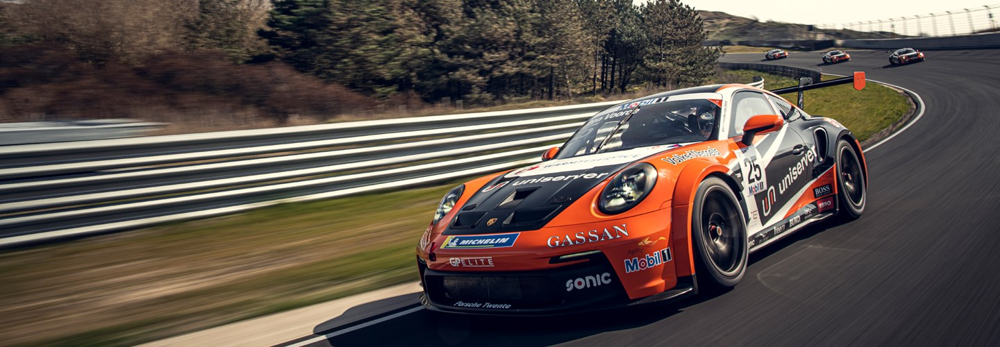

| Porsche Super Cup |
|  |
|
Porsche Supercup (resmi olarak Porsche Mobil 1 Supercup olarak bilinir, 2007'den önce Porsche Michelin Supercup olarak bilinir), Porsche Motorsport GmbH tarafından düzenlenen FIA Formula 1 Dünya Şampiyonasını destekleyen uluslararası tek markalı bir yarış premier serisidir. Porsche Supercup sürücüleri, aynı Porsche 911 GT3 Cup arabalarında yarışır. Her yarışa ortalama 24 yarış arabası katılıyor. Bahreyn, Birleşik Arap Emirlikleri, Amerika Birleşik Devletleri ve Meksika'daki pistler de takvime dahil edilmiş olsa da, dizinin ziyaret ettiği pistlerin çoğu Avrupalı.
Araçlar |